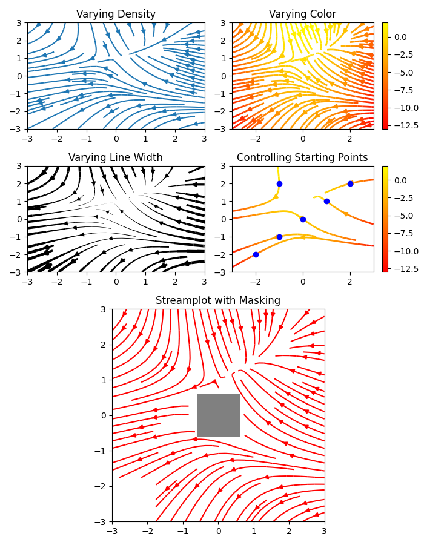
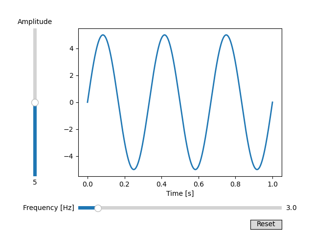
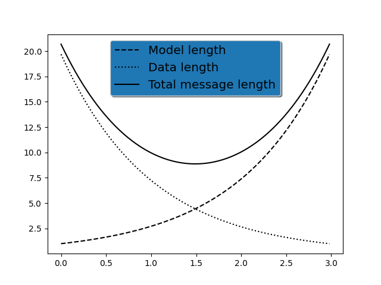
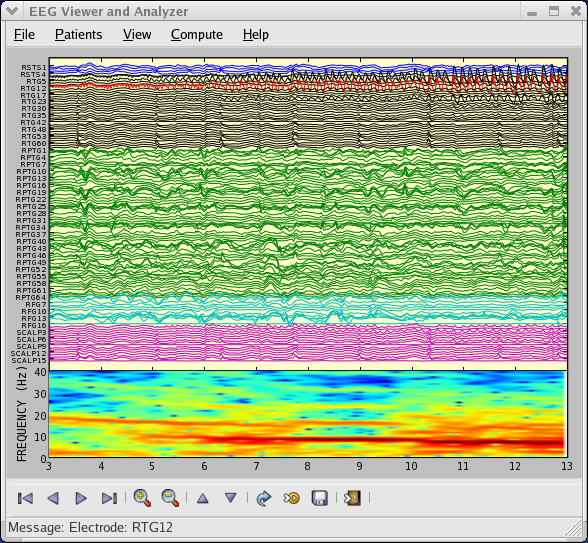
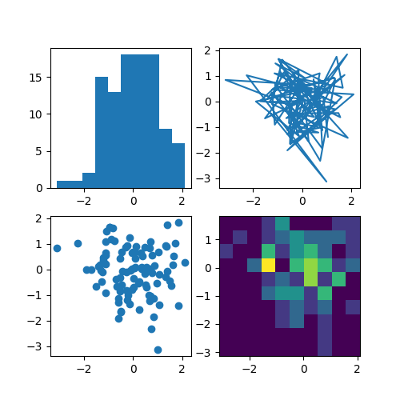

Note
Click here to download the full example code
Sample plots in Matplotlib¶
Here you'll find a host of example plots with the code that generated them.
Multiple subplots in one figure¶
Multiple axes (i.e. subplots) are created with the
subplot() function:
Images¶
Matplotlib can display images (assuming equally spaced
horizontal dimensions) using the imshow() function.
Contouring and pseudocolor¶
The pcolormesh() function can make a colored
representation of a two-dimensional array, even if the horizontal dimensions
are unevenly spaced. The
contour() function is another way to represent
the same data:
Histograms¶
The hist() function automatically generates
histograms and returns the bin counts or probabilities:
Three-dimensional plotting¶
The mplot3d toolkit (see The mplot3d Toolkit and 3D plotting) has support for simple 3D graphs including surface, wireframe, scatter, and bar charts.
Thanks to John Porter, Jonathon Taylor, Reinier Heeres, and Ben Root for
the mplot3d toolkit. This toolkit is included with all standard Matplotlib
installs.
Streamplot¶
The streamplot() function plots the streamlines of
a vector field. In addition to simply plotting the streamlines, it allows you
to map the colors and/or line widths of streamlines to a separate parameter,
such as the speed or local intensity of the vector field.

Streamplot with various plotting options.¶
This feature complements the quiver() function for
plotting vector fields. Thanks to Tom Flannaghan and Tony Yu for adding the
streamplot function.
Ellipses¶
In support of the Phoenix
mission to Mars (which used Matplotlib to display ground tracking of
spacecraft), Michael Droettboom built on work by Charlie Moad to provide
an extremely accurate 8-spline approximation to elliptical arcs (see
Arc), which are insensitive to zoom level.
Bar charts¶
Use the bar() function to make bar charts, which
includes customizations such as error bars:
You can also create stacked bars (bar_stacked.py), or horizontal bar charts (barh.py).
Pie charts¶
The pie() function allows you to create pie
charts. Optional features include auto-labeling the percentage of area,
exploding one or more wedges from the center of the pie, and a shadow effect.
Take a close look at the attached code, which generates this figure in just
a few lines of code.
Scatter plots¶
The scatter() function makes a scatter plot
with (optional) size and color arguments. This example plots changes
in Google's stock price, with marker sizes reflecting the
trading volume and colors varying with time. Here, the
alpha attribute is used to make semitransparent circle markers.
GUI widgets¶
Matplotlib has basic GUI widgets that are independent of the graphical
user interface you are using, allowing you to write cross GUI figures
and widgets. See matplotlib.widgets and the
widget examples.

Slider and radio-button GUI.¶
Filled curves¶
The fill() function lets you
plot filled curves and polygons:
Thanks to Andrew Straw for adding this function.
Date handling¶
You can plot timeseries data with major and minor ticks and custom tick formatters for both.
See matplotlib.ticker and matplotlib.dates for details and usage.
Log plots¶
The semilogx(),
semilogy() and
loglog() functions simplify the creation of
logarithmic plots.
Thanks to Andrew Straw, Darren Dale and Gregory Lielens for contributions log-scaling infrastructure.
Legends¶
The legend() function automatically
generates figure legends, with MATLAB-compatible legend-placement
functions.

Legend¶
Thanks to Charles Twardy for input on the legend function.
TeX-notation for text objects¶
Below is a sampling of the many TeX expressions now supported by Matplotlib's
internal mathtext engine. The mathtext module provides TeX style mathematical
expressions using FreeType
and the DejaVu, BaKoMa computer modern, or STIX
fonts. See the matplotlib.mathtext module for additional details.
Matplotlib's mathtext infrastructure is an independent implementation and does not require TeX or any external packages installed on your computer. See the tutorial at Writing mathematical expressions.
Native TeX rendering¶
Although Matplotlib's internal math rendering engine is quite powerful, sometimes you need TeX. Matplotlib supports external TeX rendering of strings with the usetex option.
EEG GUI¶
You can embed Matplotlib into Qt, GTK, Tk, or wxWidgets applications. Here is a screenshot of an EEG viewer called pbrain.

The lower axes uses specgram()
to plot the spectrogram of one of the EEG channels.
For examples of how to embed Matplotlib in different toolkits, see:
Subplot example¶
Many plot types can be combined in one figure to create powerful and flexible representations of data.

Keywords: matplotlib code example, codex, python plot, pyplot Gallery generated by Sphinx-Gallery